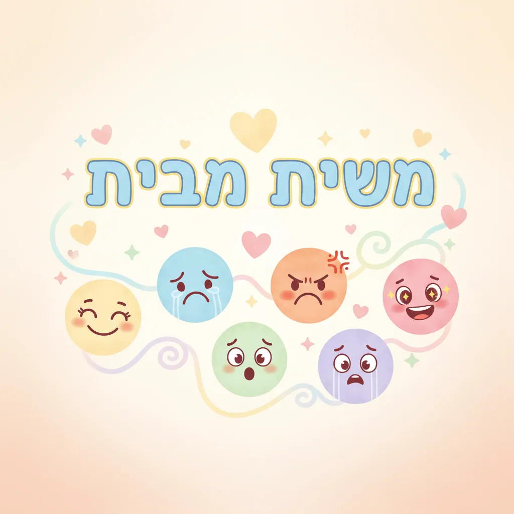

🗂 מילון רגשות אישי – גרסה מלאה
😨 פחד
https://gamma.app/docs/-bte6d3kwjsx51bv?mode=doc
- חלש: חשש, אי נוחות, פרפרים בבטן
- בינוני: חרדה, דאגה, עצבנות, חשד
- חזק: בהלה, אימה, בעתה, פלצות, פאניקה, היסטריה, שיגעון
😢 עצב
- חלש: עגמומיות, נוגות, טרדה
- בינוני: צער, יגון, בדידות, דכדוך
- חזק: ייאוש, שברון לב, מלנכוליה, דיכאון, אובדן
😡 כעס
- חלש: קוצר רוח, תרעומת, רוגז
- בינוני: זעף, חרון אף, מרמור, עצבנות
- חזק: טינה, איבה, שנאה, נקמה, תוקפנות, אכזריות, התרסה
🤢 גועל
- חלש: הסתייגות, רתיעה
- בינוני: לעג, זלזול, בוז
- חזק: בחילה, תיעוב, מיאוס, גועל נפש
😳 בושה
- חלש: מבוכה, ביישנות, אכזבה
- בינוני: חרטה, עלבון, נקיפות מצפון
- חזק: השפלה, חרפה, שפלות רוח, רגשי נחיתות
🙂 שמחה
- חלש: קורת רוח, נחת, סיפוק
- בינוני: עליזות, חדווה, התלהבות, התרוממות רוח
- חזק: גילה, דיצה, רינה, אושר עילאי, אופוריה
💗 אהבה
- חלש: חיבה, ידידות, חמימות
- בינוני: קרבה, חמלה, אחווה, הערכה
- חזק: הערצה, תשוקה, כמיהה, מסירות נפש, דבקות
😇 יראה
- חלש: כבוד, זהירות, יראת כבוד
- בינוני: התפעלות, יראת רוממות, גבול
- חזק: אימה, פלצות, בעתה
💪 אומץ
- חלש: הבלגה, אדישות
- בינוני: תעוזה, סובלנות, גבורה
- חזק: נחישות, מסירות נפש, הקרבה
🌀 ניתוק
- חלש: שאננות, אדישות
- בינוני: אפאטיות, קהות חושים, סגירות
- חזק: ניכור, אטימות, ריחוף, ניתוק מוחלט
😴 עייפות / עצלות
- חלש: לאות, עייפות קלה
- בינוני: חולשה, סחוט, חוסר כוח
- חזק: תשוש, אין אונים, חוסר יכולת
😔 מסכנות
- חלש: התחננות, עליבות
- בינוני: אומללות, נרגנות
- חזק: מקופח, מנושל, מנודה
😏 גאווה
- חלש: ענווה (חיובי), או יהירות קלה
- בינוני: התנשאות, עוצמה, עליונות
- חזק: שחצנות, כוחי ועוצם ידי, אני ואפסי עוד
😵 היסוס
- חלש: פקפוק, חוסר ביטחון
- בינוני: חשש, בלבול, ערפול
- חזק: סחרור, חוסר ודאות מוחלט, מעורער
😂 ליצנות
- חלש: משובה
- בינוני: צחקוק, הצטחקות
- חזק: לעג, הקנטה, זלזול
🫂 נתינה / קרבה
- חלש: אכפתיות, חברותיות
- בינוני: נדיבות, חמלה, שיתופיות
- חזק: הקרבה, מסירות, דאגה טוטאלית
✨ רגשות רוחניים
- אהבה: התלהבות, דבקות, חיות אש, השראה, ביטול ממציאות, התנוצצות
- יראה: ישוב הדעת, גבול, דין, צמצום, חוק, לימוד תורה
🤯 הפתעה / פליאה
- חלש: פליאה, תימהון
- בינוני: תדהמה, השתאות, התפעלות
- חזק: הלם, טראומה
🔥 דחף
- חלש: סקרנות
- בינוני: כמיהה, השתוקקות
- חזק: תשוקה, תאווה, דחף עז